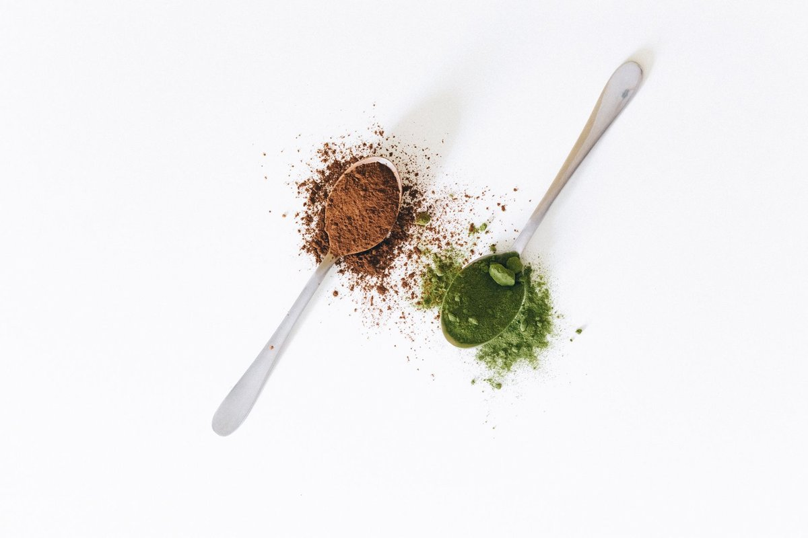

Popular Weight Loss Drugs Linked To A Surprising Fingernail Problem

Key takeaways
- I was sitting at my kitchen island tapping my desk when my thumb nail just peeled in half.
- No snag, no trauma—just a brittle, paper-thin flake coming off after three months on a GLP-1 receptor agonist.
- Track what feels sustainable and adjust gradually.
I was sitting at my kitchen island tapping my desk when my thumb nail just peeled in half. No snag, no trauma—just a brittle, paper-thin flake coming off after three months on a GLP-1 receptor agonist.
It turns out, popular weight loss drugs linked to a surprising fingernail problem is becoming an everyday reality for thousands of us navigating rapid weight drops. When your appetite vanishes overnight, your nail matrix pays the price.
Between rapid caloric restriction and shifting metabolic demands, keratin production slows to a crawl. My dermatologist confirmed that transverse ridges (Beau's lines) and onychoschizia (distal nail splitting) often spike when systemic nutrition shifts quickly.
You do not have to abandon your health journey just to save your manicures. Check out this related healthy tip on managing early appetite shifts without tanking micro-minerals.
When you eat a fraction of your previous intake, your body runs a triage system. Vital tissues like your heart and liver get first dibs on circulating amino acids, leaving your nail beds running completely empty.
I started focusing on bioavailable collagen and targeted sulfur compounds like methylsulfonylmethane (MSM) with my morning coffee. You can combine this with another practical guide to dial in high-protein breakfasts even when food sounds unappealing.
The nail problem is not just cosmetic; it is an early dashboard light flashing that your intake lacks essential structural building blocks. Look closely at the base of your lunula for faint horizontal dips.
Pro-Tip: Pair 15mg of chelated zinc with a warm bone broth midday to protect your nail beds without triggering nausea on reduced-calorie days.
Try applying pure cold-pressed jojoba oil directly to the cuticles before bed instead of synthetic hardeners. Synthetic treatments often dry the nail plate further, worsening the longitudinal ridges common during rapid fat reduction.
If you want to support your overall skin barrier during this transition, review this similar wellness insight. Keeping systemic moisture balanced internally will save you months of waiting for damaged tips to grow out.
The 2-Minute Win
Massage two drops of pure squalane or jojoba oil directly into your cuticles and nail beds every night before sleep to restore lipid flexibility immediately.
Hydration plays an outsized role here because these medications change digestive transit speeds and fluid retention. To stay consistent with this, keep a water bottle with trace electrolyte drops beside your desk.
The good news is that fingernails grow roughly three millimeters per month, meaning fresh, resilient growth can appear quickly once nutrient gaps close. For more ideas, explore more health guides tailored to sustainable metabolic support.
Educational only — not medical advice.
Recommended Reading
- The Ultimate Guide to Daily Hydration: Boost Energy & Wellness
- Morning Hydration: Unlock Your Day with the Best Water Habits
- Unlock Your Health: The Surprising Benefits of Daily Hydration
More in health
 health
healthNot All Trans Fats Are Bad, Major Review Finds: Daily Energy
Not All Trans Fats Are Bad, Major Review Finds out. Learn how natural ruminant fats can boost daily energy and curb crav
Read article → health
healthVitamin C Linked To Fewer Deaths In Blood Disorder Trial: Key Steps
Vitamin C linked to fewer deaths in blood disorder trial findings offer hope. Discover realistic, science-backed nutriti
Read article →Related posts
healthNot All Trans Fats Are Bad, Major Review Finds: Daily Energy
Not All Trans Fats Are Bad, Major Review Finds out. Learn how natural ruminant fats can boost daily energy and curb crav
Read article →healthVitamin C Linked To Fewer Deaths In Blood Disorder Trial: Key Steps
Vitamin C linked to fewer deaths in blood disorder trial findings offer hope. Discover realistic, science-backed nutriti
Read article →
healthCreatine May Help Build Muscle Even Without Exercise, Researchers Find
Creatine May Help Build Muscle Even Without Exercise, Researchers Find according to new data. Discover how this suppleme
Read article →